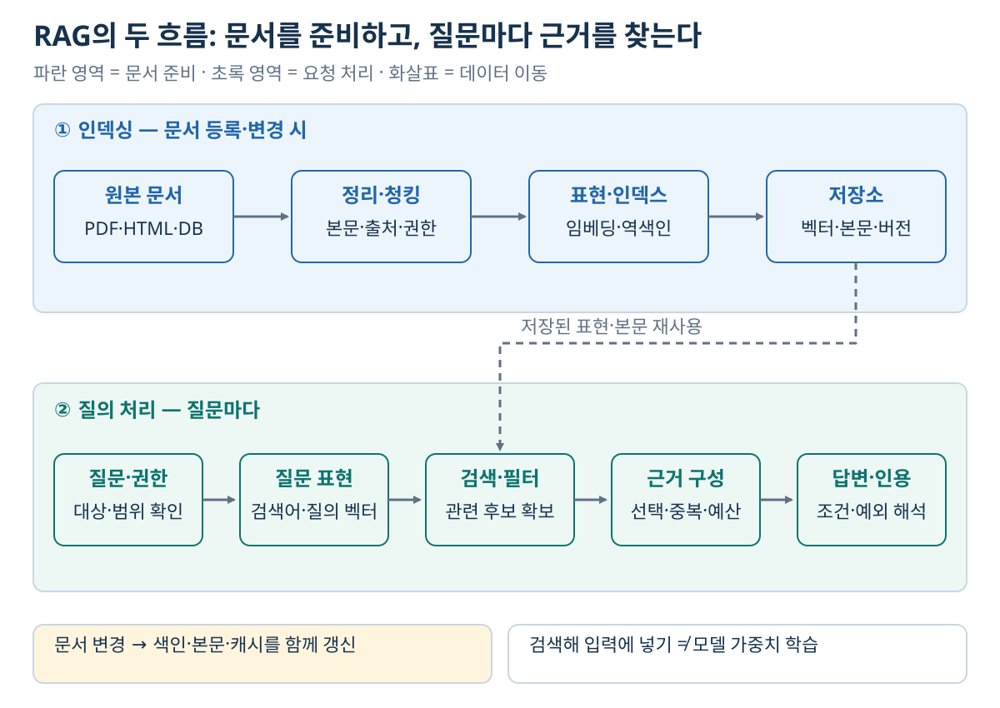
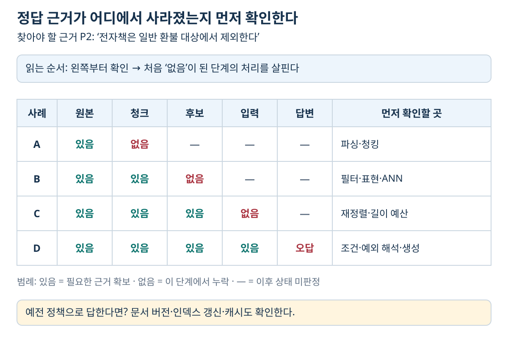

06. RAG의 전체 구조 — 문서에서 근거를 찾아 답변까지 연결하기
이전: 벡터검색과 인덱스 · 학습 안내 · 다음: 청킹과 컨텍스트 구성
1. 해결하려는 문제: 모델이 아는 것과 지금 확인해야 할 것은 다르다
고객이 “어제 구매한 전자책도 환불되나요?”라고 물었다고 하자. 언어 모델이 일반적인 환불 설명을 잘하더라도, 우리 회사의 현재 전자책 정책을 확인했다는 뜻은 아니다. 학습 뒤에 바뀐 정책, 사내 전용 문서, 구매자에게만 허용된 정보는 질문 시점에 별도로 접근해야 한다. 학습한 내용에 대해서도 모델의 기억이 정확하다고 보장할 수 없다.
**RAG(Retrieval-Augmented Generation)**는 질문과 관련된 외부 자료를 검색하고, 그 결과를 생성 모델의 입력에 넣어 답변을 만드는 구성이다. 검색은 근거를 가져오고, 생성은 그 근거를 질문에 맞게 설명한다. 문서를 프롬프트에 넣는 보통의 RAG 요청에서 생성 모델의 가중치는 바뀌지 않는다. 검색기와 생성기를 함께 학습하는 RAG-Sequence는 08장에서 별도로 다룬다.
RAG가 필요한지는 먼저 어떤 질문에 어떤 데이터로 답할 것인가로 결정한다. 날짜·버전이 중요하면 그 정보를 저장해야 하고, 전체 매출 집계처럼 모든 행을 계산해야 하는 질문에는 Top-k 문서 검색만으로 충분하지 않다. SQL이나 계산 도구를 함께 써야 할 수 있다.
| 구성 요소 | 입력 | 출력 | 맡은 일 |
|---|---|---|---|
| 문서 처리기 | PDF·HTML·텍스트·DB 레코드 | 본문과 출처·버전·권한 메타데이터 | 검색 가능한 형태로 정리 |
| Chunker | 본문과 문서 구조 | 청크와 원문 위치 | 검색 단위를 생성 |
| Embedding model | 질의 또는 청크 텍스트 | 고정 차원의 벡터 | 의미 검색에 쓸 표현 생성 |
| Retriever | 질문·필터·인덱스 | 점수와 출처가 있는 후보 목록 | 관련 근거 검색 |
| Reranker, 선택 사항 | 질문과 후보 목록 | 재정렬된 후보 | 후보 안에서 관련성 정밀 판단 |
| Context builder | 후보와 입력 길이 예산 | 모델에 넣을 근거 묶음 | 중복·순서·인용 ID·길이 관리 |
| Reader / Generator | 질문·근거·답변 규칙 | 답변 또는 보류 | 근거를 읽고 답변 생성 |
Reader는 근거를 읽어 답하는 역할을 뜻한다. 문서에서 답 구간을 뽑는 reader도 있고 자유 문장을 생성하는 reader도 있다. 이 장에서는 생성형 reader가 답을 작성하는 경우를 중심으로 설명한다.
2. 인덱싱과 질의를 나눠서 보기
RAG의 두 단계는 서로 다른 입력과 비용을 갖는다.

그림 읽기: 위쪽 파란 흐름에서 문서를 청크·표현으로 준비하고, 아래쪽 초록 흐름에서 질문에 필요한 근거를 찾는다. 가운데 연결선은 이미 저장한 벡터·본문의 재사용이다. 검색 인덱스가 주는 후보를 근거 구성기가 선택한 뒤 생성기에 전달한다. 이때 문서를 입력에 넣는 것과 모델 가중치를 학습하는 것은 다르다.
인덱싱에서는 원본을 읽고 청크를 만든 뒤, 검색에 쓸 표현과 원문을 저장한다. 문서 ID뿐 아니라 청크 ID, 원문 위치, 문서 버전, 갱신 시각을 남겨야 검색 결과를 원문에 연결할 수 있다. 의미 검색용 벡터 인덱스와 키워드 검색용 역색인은 같은 자료에서 서로 다른 표현을 저장한다.
질의 단계에서는 질문과 접근 조건을 받아 후보를 찾는다. 모델에 모든 후보를 넣는 것이 아니라, 필요한 근거를 선택하고 질문·출력 규칙과 함께 프롬프트를 구성한다. 답변이 오면 인용 ID가 실제 검색 결과에 있는지, 근거가 주장을 지지하는지도 확인해야 한다.
인덱싱은 “한 번만 하면 끝”이 아니다. 문서 변경·삭제·권한 변경이나 임베딩 모델 교체 때 갱신해야 한다. 원본 문서가 바뀌어도 이전 벡터와 본문을 사용하면 답변은 예전 정책을 따른다. 문서 갱신과 검색 반영 사이의 지연도 시스템의 정확성 조건이다.
3. 작은 예제로 끝까지 추적하기
아래는 실제 회사 정책이 아닌 학습용 자료다. 세 청크는 모두 같은 시점에 유효하다고 가정한다.
| 청크 ID | 원문 내용 | 메타데이터 |
|---|---|---|
| P1 | 일반 상품은 구매 후 14일 이내 환불을 신청할 수 있다. | 문서 refund-v3, 절 기간, 공개 |
| P2 | 전자책과 소프트웨어 라이선스는 일반 환불 대상에서 제외한다. | 문서 refund-v3, 절 제외, 공개 |
| P3 | 사내 소모품 구매는 부서장의 승인을 받는다. | 문서 purchase-v2, 사내 전용 |
질문은 “어제 산 전자책도 환불되나요?”다. 접근 가능한 공개 청크만 검색한다고 하자. 설명을 위해 실제 임베딩 모델 대신 다음 2차원 단위벡터를 사용한다.
모두 길이가 1이므로 cosine similarity는 내적과 같다. 점수는 P1이 0.8, P2가 1.0, P3가 0이다. 권한 조건을 통과한 P1·P2 중에서 Top-2를 가져오면 순서는 P2, P1이다. 이 숫자는 관련성 점수이며, 정책이 맞을 확률이나 환불 가능 확률이 아니다. 실제 모델 벡터의 각 좌표에 사람이 붙일 수 있는 고정 의미가 있다고 가정하지 않는다.
컨텍스트 구성기는 다음과 같은 입력을 만든다.
답변 규칙: 제공한 자료를 근거로 답하고 사용한 문서 ID를 표시한다.
자료에 없는 예외는 추측하지 않는다.
[P2 | refund-v3 | 제외]
전자책과 소프트웨어 라이선스는 일반 환불 대상에서 제외한다.
[P1 | refund-v3 | 기간]
일반 상품은 구매 후 14일 이내 환불을 신청할 수 있다.
질문: 어제 산 전자책도 환불되나요?
근거에 충실한 답변은 “제공된 정책에서 전자책은 일반 환불 대상에서 제외됩니다. [P2]”다. “어제 샀으므로 14일 이내여서 가능하다”는 답은 기간 규칙만 읽고 상품 예외를 놓친 것이다. P1과 P2를 둘 다 검색했는데도 이렇게 답하면 검색 성공 뒤의 근거 해석 실패다. P1만 검색했다면 필요한 예외 근거를 확보하지 못한 실패가 먼저다.
4. 임베딩 모델과 벡터 DB가 보장하지 않는 것
문서와 질문은 호환되는 검색 표현 공간에 있어야 한다. 같은 차원이라고 호환되는 것은 아니다. 서로 다른 모델이 만든 768차원 벡터를 섞으면 좌표의 기준이 다르므로 유사도 비교가 의미를 잃을 수 있다. Bi-Encoder는 질의·문서용 인코더가 다를 수 있지만, 함께 학습된 호환 공간을 사용한다. 모델이 요구하는 query/document 입력 형식도 맞춰야 한다.
벡터 DB는 벡터와 연결된 식별자·메타데이터를 저장하고 근접 후보를 찾는다. 정책의 최신성·권위·적용 대상까지 벡터 유사도만으로 판단하지는 않는다. 날짜·문서 종류·언어·사용자 권한이 중요하면 별도 메타데이터 조건을 사용한다.
| 선택 기준 | 확인할 질문 |
|---|---|
| 임베딩 | 내 문서·질문 언어와 전문 용어에서 관련 문서를 상위에 올리는가? |
| 인덱스 | 목표 recall에서 지연·메모리·갱신 비용을 만족하는가? |
| DB | 필요한 필터·삭제·백업·버전 관리·동시 접근을 지원하는가? |
| 검색 방식 | 정확한 코드·이름 검색과 의미 검색이 각각 필요한가? |
| 생성 모델 | 근거의 조건·예외를 읽고 인용·보류 규칙을 따르는가? |
모델·DB 선택에서는 제품 순위 하나보다 같은 데이터와 목표 recall에서의 측정 조건을 확인한다. API 사용료뿐 아니라 자체 호스팅·인덱스 저장·문서 갱신 비용도 비교해야 한다.
5. 후보 수와 컨텍스트 예산은 서로 다른 설정이다
검색 Top-50과 모델에 넣는 Top-5는 모순이 아니다. 전자는 정답을 놓치지 않기 위한 후보 수이고, 후자는 입력 길이·노이즈를 고려한 최종 근거 수다. 중간에 reranking과 중복 제거가 있을 수 있다. 09장에서 이 단계를 분리한다.
예를 들어 입력에 쓸 수 있는 예산을 4,000토큰, 규칙·질문·문서 ID 등 고정 부분을 600토큰, 청크 하나를 500토큰으로 가정하면 근거 예산은 3,400토큰이다.
7개는 4,100토큰으로 예산을 넘는다. 실제 청크 길이는 서로 다르고, 사용하는 모델의 토크나이저로 계산해야 한다. 출력 토큰까지 포함하는 전체 context window 제한이 있다면, 위의 입력 예산을 정하기 전에 출력에 필요한 공간도 예약해야 한다.
온라인 지연은 대략 질의 처리 + 검색 + 재정렬 + 프롬프트 구성 + 생성이다. 병렬 검색 두 개의 지연을 단순 합산하지는 않지만, 느린 검색의 응답과 결과 통합을 기다려야 한다. 청크마다 LLM으로 문맥을 생성하는 비용은 주로 인덱싱에서 발생한다. 이를 온라인 생성 비용과 구분해야 변경의 영향을 알 수 있다.
6. 실패를 단계별로 진단하기

그림 읽기: A~D는 서로 다른 실패 사례다. 한 행에서 왼쪽부터 확인하여 근거가 처음 사라진 위치를 찾는다. D처럼 최종 입력까지 P2가 있는데도 잘못 답했다면, 검색 실패보다 생성기의 조건·예외 해석을 먼저 살핀다. ‘있음’ 표시는 관련 근거를 확보했다는 뜻이며, 그 뒤 모든 처리가 자동으로 성공한다는 뜻은 아니다.
| 관찰 | 먼저 확인할 곳 | 이유 |
|---|---|---|
| 원본에는 답이 있는데 청크에 없다 | 파싱·청킹 | 표 헤더나 예외 조항이 떨어져 나갔을 수 있음 |
| 청크에는 있는데 후보에 없다 | 필터·검색기·인덱스 | 잘못된 필터, 표현 불일치, ANN 누락 가능 |
| 후보에는 있는데 최종 입력에 없다 | reranking·예산·중복 제거 | 순위나 길이 때문에 근거가 제거될 수 있음 |
| 입력에는 있는데 답이 틀리다 | 프롬프트·생성·근거 검증 | 조건·예외·시간 관계를 잘못 읽었을 수 있음 |
| 예전 정책으로 답한다 | 버전·갱신·캐시 | 최신 문서가 검색에 반영되지 않았을 수 있음 |
RAG가 외부 근거를 제공해도 생성 오류가 없어지는 것은 아니다. 검색·입력 구성·생성 중 어디에서 얼마나 실패하는지는 데이터·질문·시스템에 따라 측정해야 한다. RAG와 fine-tuning도 같은 문제를 해결하는 대체재가 아니다. 최신 근거 접근과 모델 행동·출력 방식의 학습은 함께 필요할 수 있다.
7. 스스로 확인하기
- 문서 파일만 최신으로 바꾸고 임베딩·본문 저장소를 갱신하지 않았다. 질문 시점에 최신 정책이 반영되는가?
- 예제에서 P1·P2를 모두 입력했는데 환불 가능하다고 답했다면 검색기를 먼저 바꿔야 하는가?
- 질의·문서 벡터의 차원이 같다는 사실만으로 같은 인덱스에 넣어도 되는가?
- 위의 4,000토큰 예산에서 청크를 7개 넣을 수 없는 이유는 무엇인가?
학습용 해설
- 보장할 수 없다. 검색되는 청크·벡터·버전과 캐시를 함께 확인해야 한다.
- 근거가 이미 최종 입력에 있다면 생성 단계의 예외 해석과 근거 검증을 먼저 살핀다. 검색 지표와 답변 지표를 분리하는 이유다.
- 아니다. 차원은 배열 크기이고, 좌표계의 호환성은 모델의 학습·입력 계약에 달려 있다.
600 + 7×500 = 4,100으로 입력 예산을 넘는다. 6개는 3,600토큰이다.